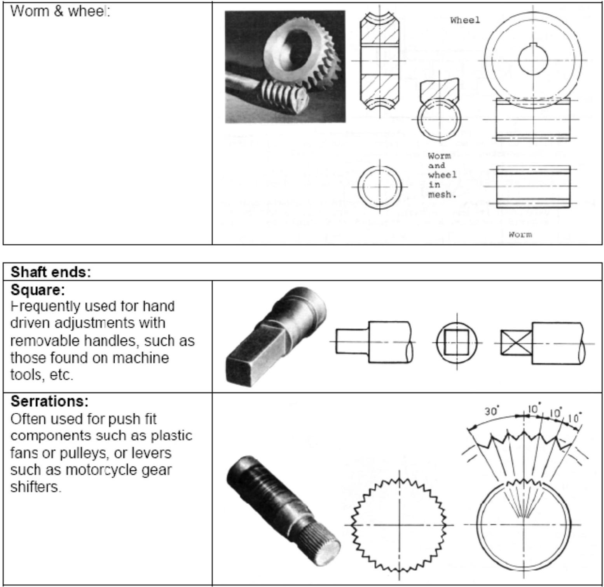

Chapter 9
Conventional Representation of Features
9.1 Introduction
Drawing of most engineering components is tedious and consumes a lot of time. The primary object of the use of conventions is to save the draughtsman time and in some cases to save on space. A set of representations have been developed and standardized to show commonly used engineering components. The following conventions are selected from BS 8888 and ISO 2203.
| General: | |
|---|---|
| Housing: A component into which a 'male' mating part fits, sits or is 'housed'. |  |
| Boss: A cylindrical projection on surface of component. |  |
| Rib: A reinforcement, positioned to stiffen surfaces. Fillet: A radius or rounded portion suppressing a sharp internal corner. |  |
| Key: A small block or wedge inserted between a shaft and a mating part (a hub). Used to prevent relative rotation of the two parts. Key way: A parallel sided slot or groove cut into a bore or a shaft, to 'house' a mating key. |  |
Figure 9.1:
Figure 9.2:
Figure 9.3:
Figure 9.4:
Holes:
Drilled:
Loose tolerance, for pilot holes or clearance holes for fasteners.
Reamed:
Accurate finishing process after drilling or boring.
Counterbore:
Usually used to recess the head of a square shouldered fastener.
Countersunk:
Usually used to recess the
head of a countersink screw.
Spotface:
Used to clean up and level the surrounding area, usually for a fastener or something such as a hydraulic fitting using a seal.
Figure 9.5:
Figure 9.6:
| Springs: | |
|---|---|
| Compression: |  |
| Tension: | Diagrammatic representation |
Figure 9.7:
Figure 9.8:
| Long components: | |
|---|---|
|
Rectangular bar: Round bar: Round tube: |
Oubjec:  $\square$ |

Figure 9.9:
Figure 9.10:
Figure 9.11: